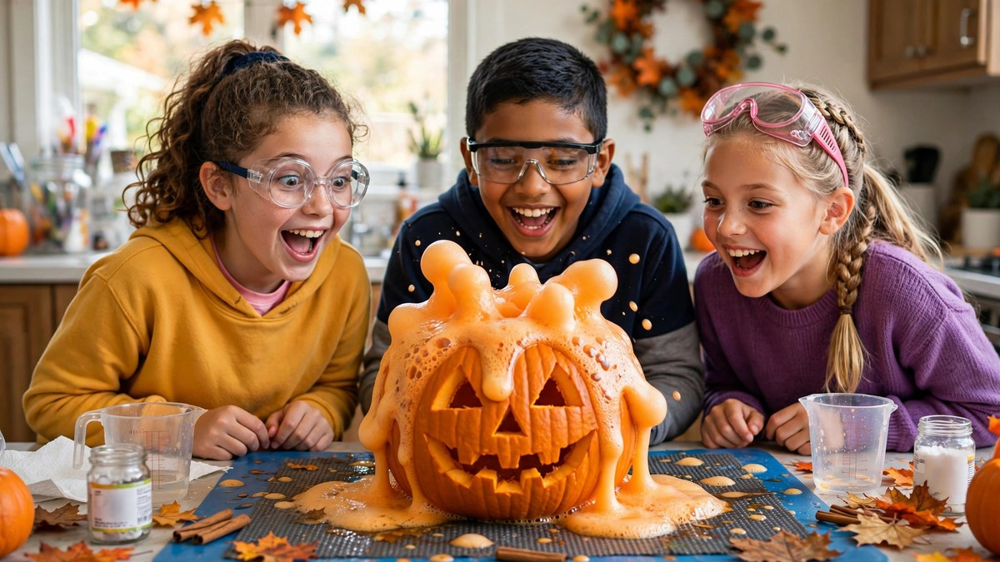

Halloween Science Experiments for Kids 2026: Spooky STEM Fun
Published October 17, 2026 · Updated October 17, 2026 · By EventBuzz Team · 4 min read

Halloween is secretly the best science holiday: potions, eruptions, and things that glow. These experiments deliver genuine STEM learning wrapped in spooky fun — the rare activity that’s educational and the highlight of the party.
Here are Halloween science experiments for kids for 2026: erupting pumpkins, ghost rockets, and bubbling brews.
Erupting Pumpkin Volcano
The classic, and it never gets old:
- Hollow a pumpkin (or use a plastic one).
- Add 2 tbsp baking soda + squirt of dish soap + orange food colour inside.
- Pour in 1/2 cup vinegar and stand back — eruption!
The science: acid-base reaction producing CO2 gas. Tip: do it outside or on a tray.
Ghost Rockets
- Draw ghost faces on white film canisters or small cups.
- Drop in half an antacid tablet + a spoonful of water.
- Cap quickly, set down, step back — the ghost launches!
The science: gas pressure builds until the cap pops. Safety: never point at faces; adult supervision required.
Bubbling Witch Potions
- Colour-change potion: red cabbage indicator + vinegar/baking soda — watch it shift colours.
- Oozing slime: glue + contact solution + food colour. The Halloween sensory staple.
- Dry-ice cauldron: adults only — dry ice in warm water for smoking brew (tongs, ventilation, no touching).
Glow & Static Fun
- Glow jars: non-toxic glow paint inside jars — “captured ghosts.”
- Static ghosts: tissue ghosts dance on a balloon charged on hair. Electricity, adorable.
- Walking water: coloured water “walks” between cups via paper towels — make it orange and black.
Pair experiments with our classroom party guide for school events.
Frequently Asked Questions
What is the easiest Halloween science experiment?
The erupting pumpkin volcano: baking soda + vinegar in a hollowed pumpkin. Three ingredients, huge payoff.
Are Halloween science experiments safe for kids?
The ones here use household materials and are safe with adult supervision. Keep dry ice strictly adults-only.
What age are these experiments for?
Ages 4+ with help; 8+ can run most independently. Adjust the explanation depth to the child.
Can I do these at a classroom Halloween party?
Yes — the volcano and static ghosts are classroom favourites. Prep materials in kits for each table.
Conclusion
Science is Halloween’s secret ingredient: every eruption and colour-change feels like magic, but it’s learning. Lab coats on, little scientists.
More kid brilliance in our activities and classroom guides.
Share this guide with friends and family — and have a fantastic Halloween 2026.
Science Kit Picks
Experiment kits and supplies for little scientists.


Links take you to Temu, where shipping and delivery details are shown. Prices can change.